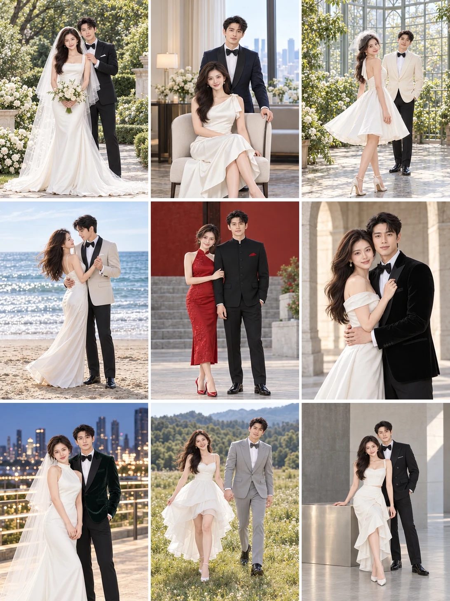

PHOTO STUDIO / 作品体验
从一份素材，看见不同可能。
切换摄影主题，查看参考与预览；点击画格，按原比例放大。



同一组真实测试输出对比，仅调整左上格取景。
REVISION / 局部返修
只改取景，
不让其他画格跟着重来。
拖动滑块查看正式合影的裁脚修正。完整六宫格保留了其余五格，修正不依赖拉伸或刻意瘦身。
这是实际测试的前后两版，不是模拟出来的“修改前”。
想用自己的照片？查看 Skill 安装与使用说明 ↗
PHOTO STUDIO / 作品体验
切换摄影主题，查看参考与预览；点击画格，按原比例放大。

同一组真实测试输出对比，仅调整左上格取景。
REVISION / 局部返修
拖动滑块查看正式合影的裁脚修正。完整六宫格保留了其余五格，修正不依赖拉伸或刻意瘦身。
这是实际测试的前后两版，不是模拟出来的“修改前”。
想用自己的照片？查看 Skill 安装与使用说明 ↗